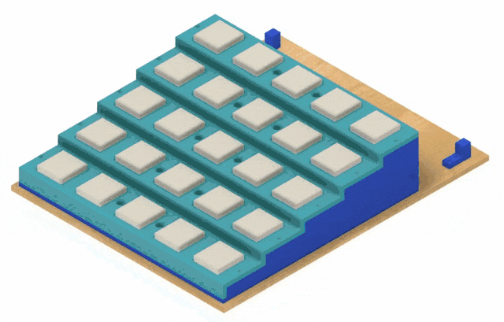
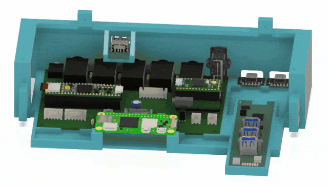
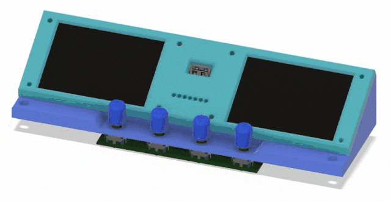
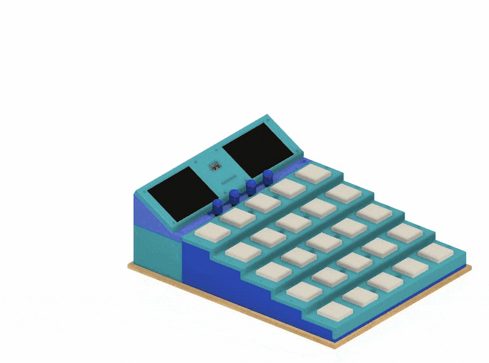

Once again, as a reminder, ALL of the information needed to build teensyExpression3 as a DIY project is available in this and linked github repos.
There are three sub-assemblies that make up the teensyExpression3 box.
Please note that these animations do not show all of the assembly details. They do not show the screws that hold everything together or the cables that generally connect the electronic components.
The first assembly is the Base Assembly. This assembly contains all of the buttons and attaches to the rest of the electronics by a single cable.

The second assembly is the Slider Assembly. This assembly has most of the electronics and all of the external jacks and plugs. It includes the mother_board with its three microprocessors as well as the USBC Hub and the two USBC breakout boards.

The Slider Assembly will be connected electronically to the Base Assembly by a single cable for the buttons, and will be physically secured with four screws.
The last sub-assembly we complete is the Slider Top. This assembly has the two touch screens, the rotary controls, the leds and the external USB port.

The teensyExprssion3 is designed to be simple to test and assemble, as well as being easy to disassemble and/or repair as needed. The Top Assembly is connected to the Slider Assembly with four M3 screws, and the entire combination slides into the Base Assembly where it is connected with an additional four M3 screws. By simply removing those 8 screws, and unplugging the cables that connect the assemblies together, you can easily get at any of the electronics components.
When assembling, of course, you have to connect the cables between the assemblies. When connecting the Top Assembly to the Slider Assembly, the following cables must be connected:

After the Top is secured to the Slider by four screws then the whole combination slides into the Base assembly, is connected by a single cable, and secured with another four screws.